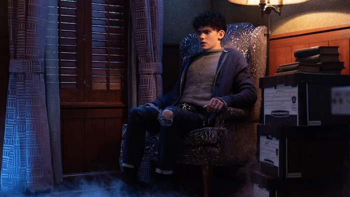

Terungkapnya Identitas Teen di Agatha All Along Episode 4
Sosok Teen (Joe Locke) menjadi misteri yang terus-terusan membuat para penikmat serial Agatha All Along bertanya-tanya. Kini pada akhir episode ke-4, terungkap sudah siapa sebenarnya Teen dan apa hubungannya dengan Agatha (Kathryn Hahn). Banyak penyihir di Agatha All Along ditampilkan lebih saling mengenal satu sama lain dalam episode 4, apalagi setelah tragedi sebelumnya yakni kematian Sharon Davis di akhir Agatha All All episode 3 membuat the Coven semakin dekat. Namun, setiap penyihir memiliki rahasia dan latar belakangnya masing-masing yang akan terungkap secara perlahan. Pada episode 4, masing-masing penyihir mengungkap lebih banyak tentang apa yang mereka alami di masa lalu; Dari hilangnya putra Agatha dan hubungannya dengan karakter Joe Locke yang tidak disebutkan namanya (hanya dipanggil Teen) hingga sifat asli Rio Vidal (Aubrey Plaza) dan petunjuk tragedi mengenai Lilia dan Jennifer.